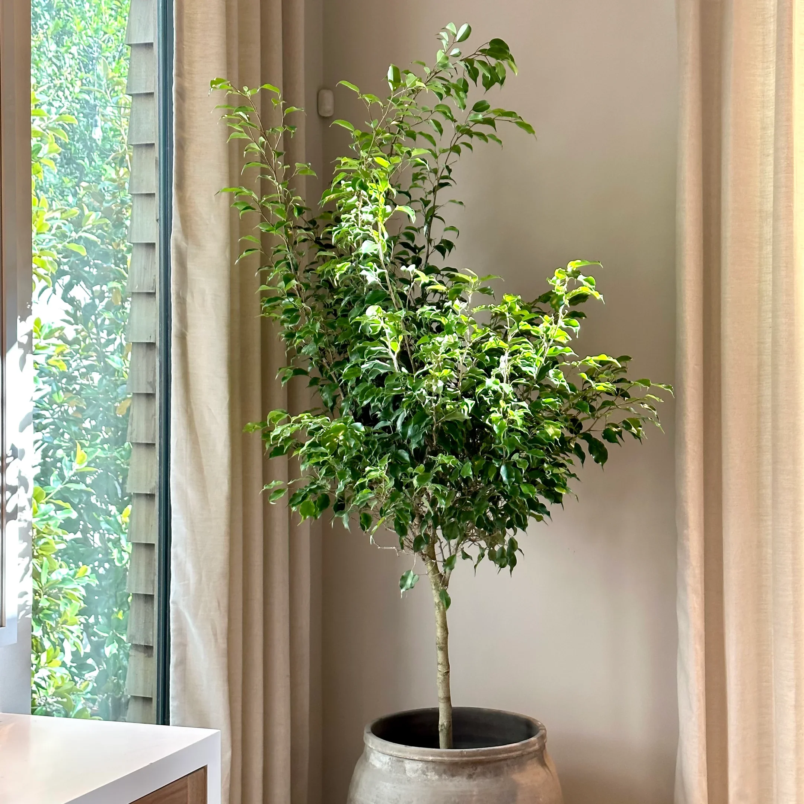
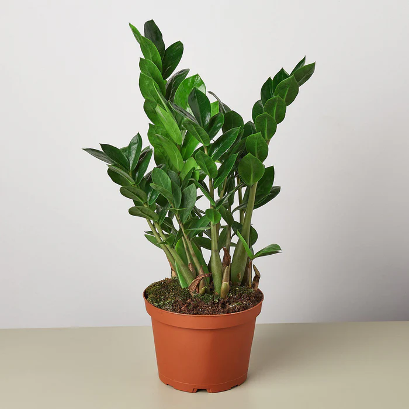

.webp)
It's needs:
| Sun Exposure: | Full |
|---|---|
| Soil Type: | Well-drained |
| Water: | Low,Average |
|
It's needs:
|
More info: |
||||||
Tips:Pelargoniums prefer to be kept slightly dry, so avoid overwatering them. Allow the soil to dry out between waterings, but do not let it become completely dry. Pelargonium loves sunlight and needs at least 6 hours of direct sunlight each day. Therefore, choose a spot that gets full sun for most of the day. Pelargoniums prefer warm temperatures and cannot tolerate frost or freezing temperatures. In general, they prefer daytime temperatures between 21-29°C and nighttime temperatures between 13-18°C. |
|  | It's needs:
|
More info: |
||||||
Tips:Ensures your Ficus benjamina receives sufficient light without direct exposure to harsh sunlight. Water until water comes out of drainage holes. Allow top 2 inches of soil to completely dry between waterings. Keeping these plants regularly moist but not soggy is preferred. Preferred Temperature: 13º - 24ºC. It's crucial to keep the plant away from temperatures below 50°F (10°C), as this could harm it. |
|  | It's needs:
|
More info: |
||||||
Tips:ZZ plants adapt to a wide range of lighting conditions and can ‘technically’ survive without any natural light. They do best, though, in bright, indirect light and can get leggy when not given enough light. Avoid direct sunlight which scorches the leaves. It's better to underwater a ZZ plant than overwater it, since the drought-tolerant plant is able to store water in its rhizomes. these tropical aroids do not tolerate cold temperatures and can suffer damage at temperatures lower than 7°C. Choose a spot away from drafts including cold air vents. |